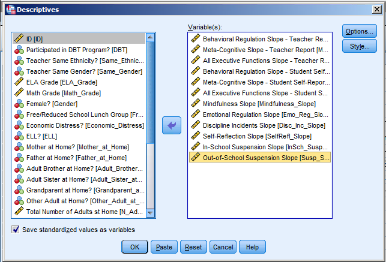
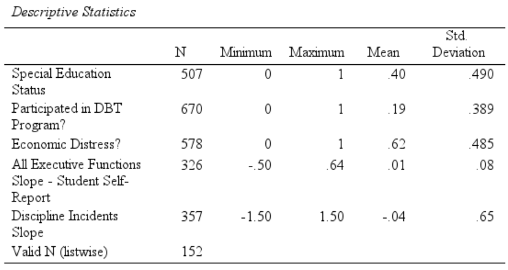
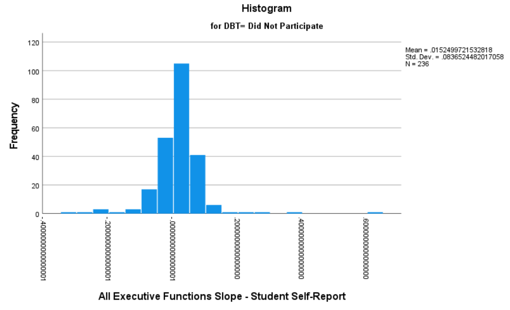
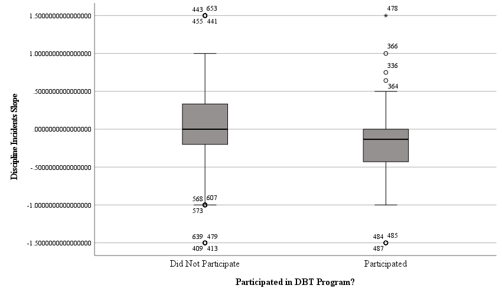
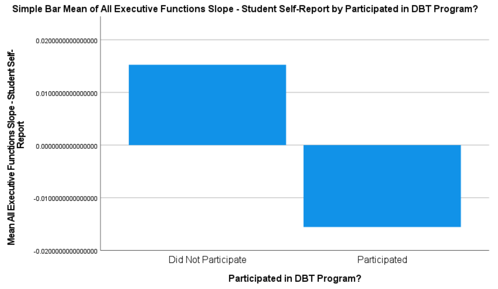
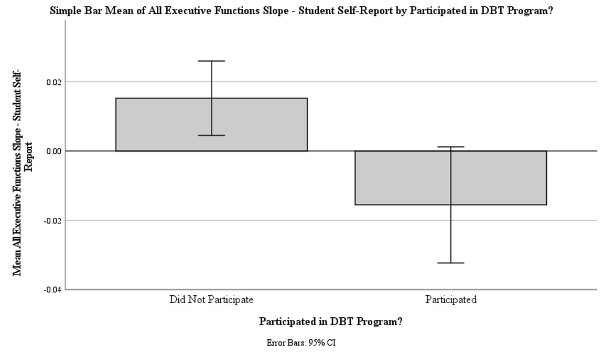
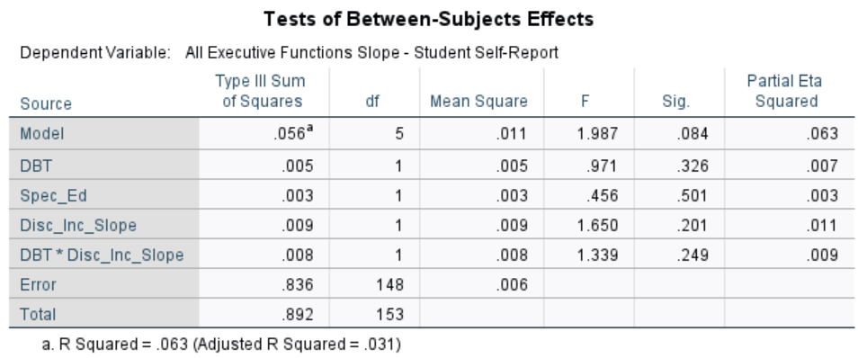
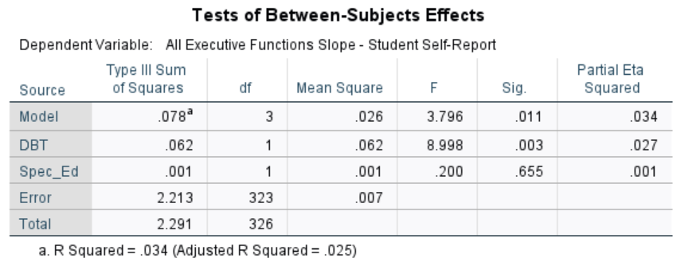
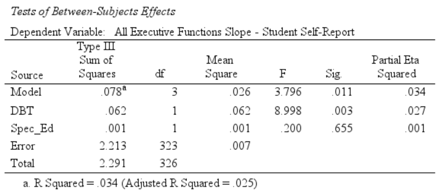
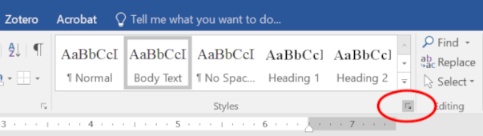

3 Writing Results Sections
Just to try make it sound like you wrote it that way on purpose. – The French Dispatch
3.1 Overview
This chapter is in some ways an abbreviated version of Section 8.3: Introduction to Linear Regression Models in Chapter 8. This sheet is intended to orient one subset of those analyses toward working within Word to write results and less on explaining how to use SPSS to prepare and analyze data. We will thus:
- Review a few options in SPSS that will help prepare tables and figures for addition to a Results section created in Word.
- Walk through a set of analyses that—in miniature—emulate the sorts of exploratory analyses one might do with the data on executive functioning slopes and adolescent academic performance & disciplinary actions.
- Add a few tables and figures from those analyses to a Word document that uses an APA-formatted template
- Write pieces of a Results section around those tables and figures
3.2 Setting Global Options in SPSS and Using a Word Template
3.2.1 Setting Global Options in SPSS
The following two action simply change the fonts for the figures and tables we’ll create. This is, of course, a small change, but most manuscripts use a serif font—and often the vaunted1 Times New Roman font. Now, all of your figures and tables will use that font.
Charts
- In the SPSS
Edit > Optionsmenu, click on theChartstab in the dialogue that appears - Change the
Style cycle preferencefromCycle through color onlytoCycle through patterns only - Now, change the
FontfromSansSeriftoTimes New Roman.
Tables
- Under
Edit > Optionsmenu, now click on thePivot Tablestab in the dialogue that appears - Under
TableLook, selectAPA_TimesRoma_12pt - Not all table will now be formatted this way, but the pivot tables and a few more will
3.2.2 Using a Word Template
Using templates takes some getting used to, but it can be both timed saved in the long run and even required by publishers like Elsevier, SAGE, and Springer.
To use a template in Word:
- Download this Word template: APA_7th_Ed_Template.dotx
- Note that the extension for that file is .dotx—not .docx. That “t” denotes that this is a template2
- After saving that file to a more useful location than the downloads folder (ahem), open it in Word.
- Note that I’ve added some language into the template to help you both know most of the elements in it and to serve as a structure for manuscripts. You can removed any and all of the text in the template (or, of course, replace it with your own); the “magic” of a template isn’t in the textual content. Indeed, that’s the point of a template: to separate the actual content that’s written from the styling of that content. The
- Choose to
Save asa .docx file—not a .dotx file—perhaps calling it something like “N916_Results_Exercise.docx.” This will preserve the template and change the extension to what is now the correct format since we will indeed be adding content and making this no longer a template to be used for other document.
I have given a fuller explanation of how to use Word templates in Chapter 13, so I will not cover the details of accessing and updating styles and sections in this guide.
3.3 Data Prep and Cleaning
The data that we will be using in the EF_Slope_Data.sav file are pretty clean and ready, but there are nonetheless a few tasks we will perform on them. Although these are not real data, they are loosely based on real data, in any case, please treat them as if they were real.
Load those data, either with the initial dialogue box that opens by default when SPSS loads or by choosing File > Open > Data... from the menu bar and selecting EF_Slope_Data.sav wherever you have it stored.
3.3.1 Adding Variable Value Labels
- Most of the dummy-coded data have their values labeled, but
DBTdoes not. After shaking your head at the forgetfulness of your instructor, open theVariable Viewtab of theData Editorwindow. - Click on the ellipsis button that appears when you click on the cell that is intersected by the
DBTrow andValuescolumn. - In the
Value Labelsdialogue box that opens, enter a0(a zero) in theValue:field andDid Not Participatein theLabel:field; then click on theAddbutton. - Now, enter a
1in theValue:field andParticipatedin theLabel:field before clickingAddand thenOK.
3.3.2 Changing Measurement Scale
- When looking in the
Variable Viewtab in theData Editorwindow, we see that that sameDBTvariable is listed in theMeasurefield as aScalevariable, indicating that SPSS is treating it like a real number. A zero in a dummy variable indicates that that trait is not present (that the student did not participate in the DBT program, the student is not female, does not experience excessive economic hardship, etc.); the zero is not a zero on a continuous scale. - We can change this easily enough in the
Variable Viewtab of theData Editorwindow. In that tab, click on theMeasurecell in theDBTrow. From the drop-down menu, choose to change it toNominal. - Note that the
Typewill remainNumeric. Changing theMeasuretoNominallets SPSS know that this number simply indicates the presence of absence of the trait denoted by the dummy variable.
3.3.3 Creating Standardized Variables
I computed the slopes from non-standardized scores. The mean for these slopes is nearly zero (e.g., -0.0018 for Beh_Reg_T_Slope), but if we convert them to truly standardized scores, we would occur these advantages:
- Being z-scores, you can get a sense of significant values (and differences): a z-score of ~1.65 is significantly different than zero in a one-tailed test where α = .05 (and two z-scores that differ by ~1.65 are significantly different).
- z-Scores of ~1.96 are significantly different at α = .05 in a two-tailed test. Smaller z-score values will be significant when the degrees of freedom for formal tests are larger.
- Comparisons between standardized variables can be made directly since they are on the same scale. This is true not only within your data set, but also—to some extent—between sets of data. (This is contingent on the assumption that any measurement biases are similar between the two sets of data.)
- You can remove the intercept term from models where all variables are standardized. This frees up a degree of freedom and makes for a somewhat easier interpretation of the model terms.
- Sometimes (actually, often) predictors are correlated with the intercept. Removing the intercept by standardizing our variables lets us “remove” the effect of the intercept and instead let that variance be placed in with the variables of interest. This can clarify our analyses, especially by usually reducing the chance of a Type 2 error.
- Similarly, if some of the predictors are strongly inter-correlated (there is strong “collinearity” as it’s called), standardizing and removing the intercept may help reduce that.
- Sometimes (actually, often) predictors are correlated with the intercept. Removing the intercept by standardizing our variables lets us “remove” the effect of the intercept and instead let that variance be placed in with the variables of interest. This can clarify our analyses, especially by usually reducing the chance of a Type 2 error.
- The model weights for each variable will be expressed in the same scale as a correlation; if we square these standardized weights, we obtained the proportion of variance accounted for in the criterion by that particular predictor (more on this later; I just wanted to add it to the list here).
Generating standardized scores in SPSS is a bit counter-intuitive. To create them:
- Click on
Analyze > Descriptive Statistics > Descriptives - In the dialogue box that opens, select the variables you would like to standardize. Let’s select all of the variables that are slopes.
- In that same dialogue box, select
Save standardized values as variablesunder the list of variables to choose from which to add to theVariable(s)pane:

- This will generate descriptive statistics in the
Outputwindow, but our interest right now is the changes made to the data set itself: At the far right of the matrix—just pastDisc_Inc_Y4, is a set of new variables. You will see that these are the slope variables, each now prepended with aZto indicate that these are z-scores, i.e., standardized. - (Note that you can also compute standardized scores in the
Transform > Compute Variablesdialogue. This interface is a lot more flexible, but doesn’t have a simply function to standardize.) - We’ll be using
ZAll_EFs_SR_Slopemore, so let’s move up higher in the list for easier access. To do this, go theVariable Viewtab in theData Editor, and scroll down to the set of standardized variables. Single left-click onZAll_EFs_SR_Slope; holding the mouse button down, drag that variable up, e.g., to right before the non-standardized set, right belowSame_Gender. - (We can move more than one variable this way. We could, e.g., left on the first standardized variable (
ZBeh_Reg_T_Slope), then hold down theShiftkey and sing left-click on the last one (ZSusp_Slope) to select them all. Then single left-click on this highlighted set; keeping the mouse button down, drag this list up. - Since we’re also using
Economic Distressmore, we could left-click onZAll_EFs_SR_Slope, hold down theCtrlbutton, left-click onEconomic Distress, and then hold the mouse button down to drag them both up. Finally, note as well that we could have done this in theData Viewtab, but I think it’s easier in theVariable View.)
3.3.4 Creating Dummy Variables
Recall that a dummy variable is a dichotomous variable that indicates whether something is present. For example, Economic Distress here lets 1 denote the presence of economic distress (beyond a pre-established threshold) and lets 0 denote the absence of that much economic distress. Similarly, Gender here lets 1 denote the “presence” of a female and 0 denote “not female.”
Some linear regression models require that nominal variables be represented by dummy variables. Even when a model doesn’t require it—like an ANOVA—adding variables as dummy variables can help with interpreting the differences between nominal categories (since we don’t have to then conduct post hoc analyses after the ANOVA to see where the differences were).
For most of the relevant variables here, I’ve already transformed them into dummy variables. Again, though, there is one I didn’t: Ethnicity. We’ll do that now.
There are a few ways to create dummy variables in SPSS; we’ll use the method perhaps easiest for when we are creating a good number of dummy variables to accommodate several categories.
In SPSS, choose
Transform > Create Dummy VariablesUnder
Dummy Variable Labels, selectUse values. This will use what is given in the cells of theEthnicityvariable to create dummy variable names. If we had created variable labels (like we did, e.g., forDBT), then we could consider using those labels instead.In the
Variableslist that appears in the dialogue box that opens, chooseEthnicityto place in theCreate Dummy Variables for:field.Under
Main Effect Dummy Variables, leaveCreate main-effect dummies selected.Enter a
Root Names (One Per Selected Variable):. These will all be ethnicities, of course, soethnicityis a logical choice here3. (Note that we cannot make the root name the exact same as the name of another variable; for example, here we couldn’t have usedEthnicityas the root name.)We do not have enough levels to create 2- or 3-way effects. If we did, choosing this would allow us to combine levels to look at more complicated relationships between them.
The dummy variables should now appear at the right right side of the data matrix.
As you can see when looking at these new variables, when SPSS creates dummy variables, it appends the root name (here
ethnicity) with a number, creatingethnicity_1,ethnicity_2, etc. without any other explanation in the data about what level is indicated. Therefore, when creating more than one dummy variable (like we did here), it is important to look at SPSS’s output; this shows us what level is being indicated in each variable. I think it’s useful to change the variable names to make it clearer what is being indicated, so we’ll do that after one more step.Normally when creating dummy variables, one must first decide what level is the “reference level,” the level against which all other levels will be compared. In some cases, this choice is easy: For the
DBTdummy variable, the control group is the clear choice for the reference level; when we set that as the control, then a significantDBTvariable effect in a model means there is a significant effect of participating in theDBTprogram. This means that there is typically one less dummy variable than there are levels to the original variable.For example, with ethnicity, we could set one ethnic category to be the reference—the one against which all others are compared. There’s no a priori reason to choose any particular ethnic group here; going alphabetically, if we made
American Indianthe reference group for all other levels, then we would not need a separate variable forAmerican Indian: If a person had0s for all of the dummy variables, that would mean that that person wasAmerican Indian. How SPSS creates dummy variables in this method, though, there was no particular group chosen to be the reference group; there is a dummy variable “yes / no” for each level—including forNA, the data were missing.The variable Labels have been made informative by SPSS, so we can see which is which. Nonetheless, the variable names are not informative. We can use this peccadillo of SPSS to take a moment to clean up these dummy variables.
To go quickly from the
Data Viewto the right place in theVariable View, double-click onethnicity_1’s column heading inData View. This will take you right to that variable in theVariable View.Since there are so few American Indians4, we will not be analyzing them, and so we can right-click on whichever of the dummy variables we just created has
Ethnicity=American_Indianas itsLabelin theVariable View. This may be the first dummy variable for you (i.e.,ethnicity_1) or another one, perhaps the second (i.e.,ethnicity_2).If you cannot right-click, then you can main-click on row number for the
American Indiandummy variable, and then either hit theDeletekey or selectEdit > Clear. This will delete that variable.There are arguably enough Asian-Americans, and certainly enough African- and Hispanic-Americans, so let’s not delete those three. Instead, change the label of the variable whose Label is
Ethnicity=Asianto, e.g,.ethnicity_asian. and the others to, e.g.,ethnicity_africanandethnicity_latin.Still in
Variable View, right-click on the row header for whichever variable’sLabelisEthnicity=Multiracialand chooseDescriptive Statistics(or click onAnalyze > Descriptives > Descriptive Statisitcs...). There are only 5 (7%) students who reported being multiracial; in “real” analyses, I would keep them, but to keep things tidier here, let’s delete this variable, too; with that row still selected (from looking at the descriptives), hit the Delete button to delete it.We can delete whichever dummy variable has nothing after
Ethnicity=in itsLabel; these are missing values since there are many better ways to evaluate missing data. There are enough Whites to change the name of the variable with theEthnicity=Whitelabel to, e.g.,ethnicity_european.
We have now created a nice set of dummy variables. Again, this set does not exhaustively explain the ethnicities of the students. Instead, we have created one that will allow us only to look at the effects of ethnic categories that we expect to be possibly informative.
One final word about these dummy variables. How the school records ethnicity, a student can either be Hispanic or Black, White, Asian, etc. Except perhaps for “Multiracial,” a student could not be both Hispanic and, e.g., Black. However, with these dummy variables—if we knew—we could in fact have a student be Hispanic (ethnicity_latin), Black (ethnicity_african), White (ethnicity_european), and Asian (ethnicity_asian) simply by having a 1 in each of those variables (or by creating 2- or 3-way variables in SPSS, but—frankly—I rarely see the value of that over just having a dummy variable for each).
3.4 Exploring the Data
3.4.1 Descriptives
- Go to
Analyze > Descriptive Statistics > Descriptives - To the
Variablesfield, addSpec_Ed,DBT,Economic_Distress,All_EFs_SR_Slope, andDisc_Inc_Slope. Note that—like Microsoft—SPSS tends to use a lot of tiny little windows for no good reason. You can expand them, but you have to expand each of them. It may be easier to only look at variable names, not also/instead the variable labels. You can do this by right-clicking on one of the variables in the list and selectingDisplay Variable Names. - The
Optionsare fine, but you can add (a few) more stats. Note thatDistributionstats are nearly always under-informative at best, misleading at worst
Including just the variable noted above should create a table that looks like this:

We can prettify the table a bit5:
- Double-clicking into the table so that we may edit it
- Left-click to select the cells that have a whole bunch of decimals places (i.e., The
MinimumthroughStd. Deviationcolumns in theAll Executive Functions Slope - Student Self-Reportand theDiscipline Incidents Sloperows) - Right-click and select
Cell Properties - Under the
Format Valuetab, change theDecimals(near the bottom) to2, and clickOK
The table should now look like this:

When the table is generated, we can simply right-click on it and select Copy before then pasting it into Word.
Older convention—and some current journals—have tables and figures relegated to the end of a manuscript. This was done because publishers used to actually take a photograph of these elements and include that photo in the published article. Clearly, this is no longer done, and thus this is no longer needed. APA 7th (p. 43) says that “[t]ables and figures may be embedded within the text after they have been mentioned, or each table and figure can be displayed on a separate page” at the end of the manuscript. I have never met anyone who prefers to read a manuscript while flipping back and forth to something at the end, so I recommend indeed placing them within the Results section6.
Once it’s in Word, add a title to this table, e.g., Descriptions of Demographic and Outcome Variables. To do this, please follow the steps in the Adding and Captioning a Figure or Table section of the Using Templates and a Reference Manager with MS Word chapter.
3.4.2 Guided Data Exploration
SPSS’s Explore function can be rather useful. Part of it replicates what we did using Descriptives, but it adds several other ways to view the data and relationships within them.
- Go to
Analyze > Descriptive Statistics > Explore - To
Dependent List, addAll_EFs_SR_SlopeandDisc_Inc_Slope. These are, of course, the continuous variables from the subgroup we’ve been using. We don’t have to use only continuous variables in theDependent List, however. - To the
Factor List, addSpec_Ed,DBT, andEconomic_Distres - Under
Plots, leaveBoxplotstoFactor levels togetherand perhaps choose bothStem-and-leafandHistogram- I don’t see the value here in selecting
Normality plots and tests, but it could be useful—if overly sensitive—in other instances
- I don’t see the value here in selecting
- Under
OptionsselectExclude cases pairwise, remember that excluding listwise is really never advisable.Report valueswould also be useful, except that here we have so many it would overwhelm us. - Under
Displayin the main dialogue, make sureBothis selected. SPSS is good for exploring data since it can easily generate lots of output.
Note that you might get error messages, mostly related to converting “XML characters.” This is simply from using the data across operating systems with different conventions for reading characters7. It is certainly worth reading any error messages you get—and you will get them from time to time. Here, they are not important, though.
Stem-and-Leaf Plots
A stem-and-leaf plots is frequency distribution, but one that also gives information about the values in each stack or “stem.” Stem-and-leaf plots were more commonly used before the easy graphics of computers. They are still quite useful, though, displaying a good amount of information efficiently.
The one detailing the All Executive Functions Slope - Student Self-Report scores for students with No Diagnosed Disability looks like this:

The “Stem” in the plot is the number to the left of the decimal8. In this plot, the “leaves” are the numbers just to the right of the decimal. Finally, the “Frequency” is the number of times those “leaves” appear in the data. The legend at the bottom notes that the stem width here is .1 (which confusingly spans two .1 digits) and that each leaf denotes one case, here one adolescent.
For example, that plot has a “Frequency” of 5 for the -1 stem. This means there are five leaves connected to that stem. Those leaves are:
-1.0-1.0-1.0-1.0-1.1
I.e., four -1.0s and one -1.1.
The next stem—the first -0 stem—indicates that there are five -0.8s and two -0.9s.
Note that SPSS has truncated the values beyond the .0 or .1. This is commonly done to facilitate presenting the data. Note, too, that SPSS certainly could have grouped some of these stems together, e.g., making the leaves for the same stem be all of the .6s, .7s, .8s, and .9s together after the same -0. stem. Alternatively, it could have divided them up even further. It’s arbitrary, and so one can use whatever seems best.
Box-and-Whisker Plots
Like stem-and-leaf plots, box-and-whisker plots summarize the distribution of scores without making any assumptions about them. They simply describe the distribution. Box-and-whisker plots provide a bit less information than stem-and-leaf plots, but they may be a bit easier to read at a glance.
The one for student self-reported GEC slopes by DBT participation is:
 Box-and-whisker plots are easily confused with figures that have error bars on them, but these box-and-whisker plots are different. The thick, black line in the middle of they (here) grey box indicates the median. The grey box around that thick line indicates the range of scores that contains the middle half of the data; in other words, the space between the top of that grey box and that thick line contains the 25% of the scores above the median, and the space between the bottom of that grey box and the thick line contains the 25% of the scores just below the median.
Box-and-whisker plots are easily confused with figures that have error bars on them, but these box-and-whisker plots are different. The thick, black line in the middle of they (here) grey box indicates the median. The grey box around that thick line indicates the range of scores that contains the middle half of the data; in other words, the space between the top of that grey box and that thick line contains the 25% of the scores above the median, and the space between the bottom of that grey box and the thick line contains the 25% of the scores just below the median.
The “whiskers” are those thin “Ts” that extend out above and below the grey box; these contain (just about) the upper- and lower-most 25% of the data. I say “just about” since scores that could be considered outliers are shown individually beyond the ends of those whiskers.
This figure thus shows a rather small range for the grey box and the whiskers—especially for those who did not participate. That group also shows a lot of outliers. Together, this suggests that the data for student self-reported GEC slopes among those who did not participate in the program has a high peak and long tails. The concomitant histogram also shows that:

Looking again at the box-and-whisker plots, we can see how much variability there is in these data. There are many data that could be considered as outliers and—seen in relation to the whole range of scores—the differences in the medians are not great. This means that whether an adolescent participated in the DBT program provides relatively little information about the self-reported changes in their executive functions—and that there is a lot more yet to be understood about it, given the great variability. Something is differentiating the students, but little of that is the DBT.
And yet, as we’ll see below, the effect of the DBT is still significant. Which should put into perspective a bit what little it can mean for something to be significant.
Normally, I wouldn’t include box-and-whisker plots in a Results section since they are so raw, but let’s please add to our Word file that one for student self-reported GEC slopes by DBT participation as well as the box-and-whisker plot for discipline incidents over time by DBT participation:

Please also give them captions when you copy them into the Word file.
3.4.3 Copying a Figure to Word
- Right-click on the figure, nd choose
Copy as- Choosing
Imagewill paste it as is, including the changes we made to the chart’s colors, etc., however, this cannot be further edited in Word - Choosing either
Microsoft Office Graphics ObjectorEMFwill paste it without that formatting, but in a version that can be edited in Word
- Choosing
- Paste this into Word after the table of descriptives
3.4.4 Correlations
I find it often useful to first look at the bivariate (zero-order) relationships between my variables—both predictors and outcomes.
- In SPSS, click on
Analyze > Correlate > Bivariate - Select what you want, but please include
Spec_Ed,DBT,Economic_Distress,All_EFs_SR_Slope, andDisc_Inc_Slopewhich have some interesting associations - Under
Options, make sureMissing valuesareExcludedpairwise. Here as much as anywhere, excluding listwise both removes useful information and likely biases the data we are looking at unless the data really truly are indeed missing completely at random. - In the main dialogue box, make sure
Flag significant correlationsis selected. You canShow only the lower triangle; personally, I think this can be good to present to others, but I like to see both halves for myself. - In that main dialogue, we could select to also present
Kendall's tau-band/orSpearman rho.
If you only included those variables, the first few rows of the correlation matrix generated should look like this:

If you added in other variables, the correlation matrix may be huge; in any case, they often will be for whatever analyses you do—especially exploratory ones. Because of this, I find it easier to explore them in a spreadsheet, so:
- Right-click on the correlation matrix that’s generated in the output and
Copy AsanExcel Worksheet (BIFF)9 - In Excel, paste this into an empty sheet
- Also in Excel, single-left click on the first cell with a correlation value
- Under the
Viewtab, click on theFreeze Panesbutton near-ish the middle of the ribbon. This will “freeze” all cells above and to the left of that cell, letting you scroll around the matrix while keeping the labels for the rows and columns visible. - You’ll see that the correlation between changes in student self-reported GEC (“All Executive Functions Slope - Student Self-Report”) and DBT is smaller (r = -.165) but significant (n = 326, p = .003). The correlations between DBT participation and changes in “Discipline Incidents Slope” is also significant (r = -.131, n = 124, p = .020). The correlation between “Discipline Incidents Slope” and self-reported GEC isn’t significant (r = .091, n = 153, p = .262), but its association with DBT may make it affect the DBT – student GEC slope relationship.
Please add this table as well to the Word file after the box-and-whisker plot, and give it a caption, too.
Please remember that the instrument used to measure executive functions here, the BRIEF, is keyed so that lower scores denote greater executive functioning. (It asks respondents to report how often problems with executive functions happen, so higher scores denote more problems.) I nearly reversed-scored it here so that higher scores on all variables denote better things. However, I think it’s a useful exercise to break the habit of relying on that.
One reason I say that is in response to finding many beginning writers of research rely on using “positive” to indicate “good” things (“the intervention had a positive effect on recovery”) and “negative” to indicate “bad” things. Although this works fine for ordinary life, it is not defensibly appropriate for research since (1) it implies an inappropriate value judgement being made by the researcher and (2) there certainly are cases were positive numbers indicate less—or less good stuff. Higher values of blood pressure, BMI, A1C, antinuclear antibodies, etc. are often “bad,” and it would be confusing to say that something had a “positive” effect on their levels and then show negative correlations.
3.5 Creating Figures in SPSS
Explore creates several useful figures on its own, but SPSS has a pretty good general functionality to create a range of figures. Let’s review a simple but common example.
- Select
Graphs > Chart Bulder - A dialogue will open asking you to ensure that all variables are put on the correct response scales; you can have this not appear, but I like to leave it as a warning to myself. Here, you can simply click
OK - From the
Gallery, chooseBarand select the first, simplest option: - Drag that simple bar-graph icon into the chart preview window
- Now, drag
All_EFs_SR_Slopeto the y-axis andDBTto the x-axis to generate this figure:

We can see that see the differences between the DBT groups much more clearly—but at the expense of a lot of information we know is there about the variability of the slopes.
But first, let’s tweak the figure some more:
- Under the
Elements Propertiestab to the right, selectBar1; we can make changes here to all of the bars. Here, we’re simply going to select toDisplay error barsthat areConfidence intervalsof95% - Click
OK - Double-click on the chart
- Single-right click on the numbers in the y-axis
- Choose
Propertiesfrom the window that opens (or typeCntl/Cmd + T) - The default range (“scale”) of the chart is all right, but it’s easy to change that under the
Scaletab- Although I would prefer to select
Display line at originhere since the origin here is simply zero—that there was no change in student GEC scores - Times when would change the range for the y-axis are when I have more than one chart
- Although I would prefer to select
- Select the
Numberstab, and change theDecimal Placesto2; clickApply—even before moving to another tab in this dialogue.
The chart should now look something like this:

Note that the 95% confidence intervals suggest that the self-reported executive functions of students who did not participate in the DBT program became significantly worse over these years (i.e., significantly more positive) since the 95% confidence interval for that group did not overlap zero. The change in executive functions for those who did participate overlaps zero, so we can’t say, with sufficient confidence, that there was a change in those (at least not without taking into account other factors).
3.6 Analyzing Predictors of Self-Reported GEC Slope
3.6.1 First Model
- In SPSS, select
Analyze > General Linear Models > Univariate10 - Add
All_EFs_SR_Slopeto theDependent Variablefield. We are seeing how well we can predict a teen’s growth of executive functioning, so this is our outcome. - Most critically here, we’re interested in whether participating in the DBT program changed—improved—the development of these teen’s executive functioning. So, add
DBTto theFixed Factor(s)field. Usually any nominal variable can be placed in there. - Add
Spec_Edas well to theFixed factor(s)field. - Place
Disc_Inc_Slopin theCovariate(s)field11 - Click on the
Modeltab. When usingGeneral Linear Models(GLMs), you will nearly always go here to make sure it looks all right and to modify your model. The default is to analyze theFull factorialmodel; this includes all main effects and interactions—even higher-order interactions (like 3- and 4-way interactions) that are usually futilely hard to interpret let alone communicate. Instead, select toBuild terms. - Under
Build Term(s)(in the middle, between theFactors and CovariatesandModelfields), selectMain effects - Now, under
Factors and Covariatesselect all of the terms (single-left click any, thenCntl/Cmd + A) and move them via that arrow to theModelfield. - Now change
Build Term(s)toInteraction.Disc_Inc_Slopecorrelates with bothAll_EFs_SR_SlopeandDBT, so it may moderate the relationship between those two; given this, let’s add theDisc_Inc_Slope\(times\)DBTinteraction - The terms are all either dummy-coded or standardizes (into z scores), so we can de-select
Include intercept in modeland pat ourselves on the back for using our stats-fu to (slightly) increase the power of our model. This dialogue box should now look like this:
- The
Contratsof our model are all right since the dummy-coding will do all of that for us. - Although we’re not adding any
Plots, they can be useful to investigate relationships among predictors. - The
EM Meansare estimated marginal means. These can be useful for investigating our well our model fits our data, so let’s select to compute them for(OVERALL)andDBT.Residual Plotsare also informative, so please select that as well. - Under
Options, please selectestimates of effect size, an option that really should be selected by default.Descriptive statisticsis just SPSS trying to make you think it’s doing a lot when it’s just doing the same thing twice.Observed poweris nearly always useless, even if some think it means anything.
Source Table of the First Model
The Test of Between-Subjects Effects table summarizes the results of this initial model:}

The parts of this table are:
Source- The sources of variance—hence why this is called a source table. Here, these include:
- Model: The total amount of variance in the data that is accounted for by the whole model, i.e., all of the variables and any interaction terms
- DBT etc: These are the individual terms in the model, one row for each term. Note that the
DBT*Disc_Inc_Sloperow presents the results for theDBT\(\times\)Discipline Incidents Slopeinteraction. - Error: This is the variance in the data not accounted for by the model.
- Total: The total amount of variance in these data. Data sets with more variance have more information—more to learn, but more to figure out and account for.
- The sources of variance—hence why this is called a source table. Here, these include:
Type III Sums of SquaresWe are computing a linear regression (using a general—i.e., not specified/specialized—formula), which—of course—means that a line is plotted through our data12. Unless the model (and the line drawn by it) perfectly fit our data, then each individual’s data point may be some distance off this line. If, overall, the data points fall far from the line, then that means that the line (and the model we’re testing based on it) don’t account for much of whatever’s going on in the data. We compute these distances from the line by squaring their distance; we then add up—sum—these squared distances. This is the
Sum of Squares.There are, in fact, different ways to compute this sum of squares, but the third way is currently the most common (and has been for a long time); it is more often used because it can more flexibly account for a wider range of models with different numbers of main and interaction effects.
dfThese are the degrees of freedom need to estimate the effects of each term (or, in the
Errorrow, that are left over after estimating the model; and, in theTotalrow, the total number available in the model).The idea is this:
Again, there is only so much information in any set of data. One way of thinking about that information is that every person brings a piece of information. We want to convert that “raw” information into insights. However, there are only so many insights we can make, of course. Each insight costs us. How much does an insight cost? Each insight—each numerical value computed to describe an effect—costs one degree of freedom13.
How many “insights” are needed to determine the effect of a given variable/term in a model? Well, it depends on how complex a variable/term is. Determining what’s going on in a variable that itself has a lot of levels costs more than it does to see what’s going on in a simple variable with only a few levels. If, for example, we want to understand what the effect of race is on something, then we actually want to figure out what the effect of each racial category is, and so each level will cost us. Each value for each race would need to be calculated … almost. In fact, we get the estimate for one level for “free” because one level’s value is the default level estimated by the overall model; we really just need to determine how much each of those other levels differs from the default level. This “default” level is called the reference level since all other level’s value are given in reference to that one level. Which level we (or the model) sets as the reference only matters if there’s a theoretical reason14; otherwise it doesn’t, it just saves us a degree of freedom.
A variable/term that only has a few levels takes less to estimate. A dummy variable, with only two levels (has/hasn’t; is/isn’t; etc.) in fact only needs to make one insight: The overall model already estimates what it’s like not to have/be whatever the dummy variable is measuring. I mean, that’s technically true for everything not included in the model, isn’t it? The effect of, say, having freckles isn’t estimated in the model—the issue is when we want to estimate the effect of having freckles. Of course, we can only estimate the effects of factors that were measured, but it is nice to know that measuring effects that are dichotomized as dummy variables makes for a very efficient way of finding insights15.
Mean SquareThis is how much information there is in a variable/term divided by how many “insights” that information has to figure out. If a variable has to estimate several values but doesn’t have much information to use to do so, then there likely isn’t much there to worry about16
Here, then, the whole model’s
Sum of Squaresis .056, but that information is divided up among four terms, and we must also spend a degree of freedom to estimate the default level for each variable17; we thus must divide that .056 up five ways, and \(\frac{.056}{5} = .011\), theMean Squarevalue for the whole model.
FThis is the ratio of how much information there is explained per degree of freedom in a given term relative to how much information is there left to be explained in these data. It’s the
Mean Squarefor a given term divided by theMean Squarefor theErrorrow. I.e., \(F =\frac{\text{Mean Sqaure}_{Term}}{\text{Mean Square}_{Error}}\).Looking at the
Modelterm again, theMean Squareis .011. TheMean Sqaurefor theErrorterm is .006. So theMean Squarefor the model is about double theMean Squarefor the error term. Specifically, \(F = \frac{.011}{.006} = 1.987\). This means that, on average, the “insights”—the piece of information in each degree of freedom—made by our model account for about twice as much information as any other “insight” made by any other piece of information that could have been gleaned from our model. Is that good? Well . . .
Sig.Presents the significance level of that term. This is usually (i.e., outside of SPSS) referred to as p, the probability of a false positive (Type 1 error). Convention in the health & social sciences, of course, is to tolerate making a false positive error 5% of the time. I.e., the p-value—the
Sig.column—should have a value \(\le\) .05.So, no, explaining about half of the information in the data isn’t enough. The
Sig.value is .084—pretty close, but not significant. Since the overall model isn’t significant, none of the individual terms should be either. In the very off chance any were, we wouldn’t be justified to use them since the overall model itself isn’t.
Partial Eta SquaredAn ascendant idea in statistics (and thus quantitative research in general) is that of effect size. Significance (
Sig.) determines if an effect is significant, but not how significant. Heck, one could argue that “significance” itself doesn’t really matter—and there are certainly many cases when it doesn’t. Instead, there is a growing conviction to instead make decisions based not only on significance of an effect but also (or instead) on the size of it.Partial Eta Sqaured(or partial η2, the lower-case Greek letter “eta”) is a measure of effect size. It is “partial” in the sense of a partial correlation: It’s the effect, e.g., participating in the DBT program after isolating that effect from the other terms in the model (i.e., of partialing out the other effects)18. (Cf. Chapter 6: Effect Size.)There are different ways to compute effect size, but perhaps the simplest is also what’s (essentially) used here. The effect size measure of, e.g., the DBT program is simply the difference between the EF slopes the of DBT participants and the EF slopes of the non-participants. Like usual, though, we then standard this mean difference so that we can compare effect sizes across outcomes and even across studies. And like is often done, we standardize it by dividing it by the standard deviation. So, the formula here is actually: \[η^2_{\text{DBT Program Participation}} = \frac{\text{Mean}_{\text{EF Slope of DBT }Participants}- \text{Mean}_{\text{EF Slope of DBT }Non-Participants}}{SD_{\text{DBT Variable}}}\]
Cohen (1988) laid the foundation for defining effect size and on establishing general criteria for gauging how big is big (and how small is small). He suggested that for η2 (partial or not):
- η2 \(\le\) .01 is “small”
- η2 = .06 is “medium”
- η2 \(\ge\) .14 is “large”
It should—needs to be—noted that Cohen meant these small, medium, and large monikers to be suggestions—not) absolutes. This is important to note since Cohen’s suggestions are already being ossifed as rules that must be used. Large is large if that’s big enough to matter. Small is small if, well, O.K., 1% total variance is small, but still can matter especially for persistent effects.
A few more things to note about this source table. First is that the R Squared noted at the bottom. R2 is also a measure of effect size, and one you’ll see reported often. It’s the effect of an entire model, and also expressed as a proportion of total variance. Therefore, this R2 of .063 means that this model accounts for 6.3% of the total variance in the model19. Cohen would suggest that this is a “medium” size effect—even if it is not a significant one.
Second, note that the R2 for the model is the same as the “Partial Eta Squared” for the whole model. This will always be the case (within rounding), and both say that 6.3% of the total variance is accounted for in the model20
Third, SPSS also provides an Adjusted R Squared parenthetically after the un-adjusted one. This is the R2 for the model after adjusting for the number of terms in it. We can improve the fit of a model simply by adding nearly any other variables from the data to it. Even if the newly-added variable doesn’t account for a significant amount of the variance, it will still account for some. Add enough non-significant terms and eventually the whole model itself will reach significance, even though no term within it is significant (or has a good effect size). To compensate for this, SPSS offers this adjusted value, which is reduced a bit for each term in the model, regardless of whether that term was significant or not.
Fourth, purposely, there are no significant effects. All of the p-values (Sig.s) are greater than .05.
Let’s play further with it to see what we can find.
3.6.2 Second (Final) Model
Let’s remove the Disc_Inc_Slope \(\times\) DBT interaction. Interaction terms are often harder than main effects to find as significant, if for no other reason that the main effects—with which they surely correlate—are often added to the model as well, so the interaction term and the respective main effects are “fighting over” some of the same variance. This turns out not to do anything, but when we then also remove the Disc_Inc_Slope and SelfRefl_Slope main effects, we find that the DBT main effect becomes significant. (Also remove Disc_Inc_Slope and SelfRefl_Slope from the Covariate(s) field or SPSS will yell at you.)
The new model’s source table should look like this:

Removing those variables made for a significant model: The p-value is .011, which is less than .05. The effect size for the model is smaller, but we have narrowed ourselves down to a smaller set of variables that do explain significantly more about these teens’ neurocognitive growth than most other things do. Looking at the terms in it, we see that it’s DBT program participation that’s doing the heavy lifting.
Were we simply exploring these data to find a parsimonious model that accounts for the most variance, we’d probably remove the Spec_Ed term as well. This term indicates whether a teen has been diagnosed with a special need (whether they’re in special education), and many of the disabilities that lead to this designation are cognitive, so it seems informative and theoretically relevant to leave it in and show it’s weak effect here.
Why did the model (and the DBT term in it) become significant? Looking back at the correlation matrix, we see that Discipline Incidents Slope and DBT participation were correlated (rpb = -.189, p < .05). Since DBT and Disc_Inc_Slope shared a significant portion of their variances, partialing out Disc_Inc_Slope removed a significant portion of DBT in our model, leaving less of it to show a significant relationship with All_EFs_SR_Slope. This is not unusual, especially in field-based studies where we can’t create well-controlled (and simpler) situations.
Note, however, that participation in the DBT program was essentially random. It cannot be that Disc_Inc_Slope, which measure whether a teen is getting in a increasing/decreasing amount of trouble at school, affected whether they participate in the DBT program. It could be that participating in the DBT program affected the number of times they were disciplined for getting into trouble, though. When these data were collected, they had only participated in the DBT program for two years, but if the program affects the development of their executive functions, it may well also affect their propensity to act out. This would make for a great structural equation model testing the causal relationships between those three variables.
Let’s do one more thing to this table, and then move on to writing parts of a Results section.
- Right-click on the table and selection
Edit Content - Choosing either to edit it
In ViewerorIn Separate Window, right-click again on that table. - Choose
TableLooks... - In the dialogue that opens, select
APA_TimesRoma_12ptfrom the list ofTableLooks Files. Note that you canReset all cell formats to the TableLook; this will make any further tables you create also have this formatting. The table should now look like this:
 1. Right-click once again on the table and select Copy and then paste it into the Word file where it will now be a Word-style table.
3.7 Writing the Results
3.7.1 Overall Strategy
My general strategy for organizing Results sections is to:
- Think of the main points I want to make in my Results. This usually revolves around the research questions (hypotheses, whatever) that are the goals of the manuscript;
- Create a set of visual displays (tables and figures) that present the main points I want to make;
- Orient the reader to the content of those visuals,
- While focusing on the parts of those visuals that relate to my main points,
- And supporting what I describe in those visuals with stats (that are usually given only parenthetically).
I can and do discuss other results, both that are presented in those visuals and otherwise. But, I try to maintain the focus of the conversation on the main points of the manuscript. So, if there are additional points that are interesting / need to be explained but aren’t directly related to the main points, I will indeed discuss them. However, I will try to make it clear that those are indeed ancillary points. I will do this sometimes by saying so.
Often, however, I try to separate the main points from ancillary ones in how I organize the Results. This may simply mean relegating the ancillary points to separate paragraphs. This works especially well if you do indeed ensure that each paragraph has a clear topic sentence, and that each other sentence therein directly relates to—usually simply expands upon—that main sentence. It’s also often best to place the topic sentence first.
Separating out ancillary points may, however, also mean creating subsections of my Results, perhaps into an Ancillary Analyses section, if a more explanatory heading doesn’t fit. This is an other time when templates can help, since you need only format a subheading, give it a clear title, and keep on typing. I may be a bit over-zealous in my use of subheadings, but I’ve yet to have anyone complain. to the contrary, I’ve heard that it helps both to understand what it being discussed and to help readers find the topics they’re currently interested in. It sure helps me find them when I revise my writing.
MAGIC Arguments
In a complementary view, Abelson (1995) posits that persuasive, scientific arguments contain five, general, MAGICal characteristcs:
Magnitude pertains to Abelson’s contention that “the strength of a statistical argument is enhanced in accord with the quantitative magnitude of support for its qualitative claim” (p. 12). Among the measures of magnitude are effect size and confidence intervals. I wholly agree these should be presented and considered in most Results sections. I find his presentation of “cause size” interesting but unnecessary.
Articulation refers to Abelson’s recommendation to include as much detail and specificity about the differences (or lack) between groups. His formal presentation of articulation in Chapter 6 is interesting, but I find this example he gives to be sufficient:
[an] investigator is comparing the mean outcomes of five groups: A, B, C, D, E. The conclusion “there exist some systematic differences among these means” has a very minimum of articulation. A statement such as, “means C, D, and E are each systematically higher than means A and B, although they are not reliably different from each other” contains more articulation. Still more would attach to a quantitative or near-quantitative specification of a pattern among the means, for example, “in moving from Group A to B to C to D to E, there is a steady increase in the respective means.” The criterion of articulation is more formally treated in chapter 6, where we introduce the concepts of ticks and buts, units of articulation of detail (p. 11).
Generality is similar to generalizability in that it “denotes the breadth of applicability of the conclusions” (p. 12) but also contains elements of “triangulating” insights through multiple studies and methods. He argues that “[h]igh-quality evidence, embodying sizable, well-articulated, and general effects, is necessary for a statistical argument to have maximal persuasive impact, but it is not sufficient. Also vital are the attributes of the research story embodying the argument” (p. 12). He further expands upon his ideas in relation to an ANOVA in Chapter 7.
Interestingness and credibility (covered next) are elements Abelson sees as important components of an effective research narrative. His coverage of it in Chapter 8 is indeed useful. A quick summary of his ideas are:
that for a statistical story to be theoretically interesting, it must have the potential, through empirical analysis, to change what people believe about an important issue. This conceptual interpretation of statistical interestingness has several features requiring further explanation, which we undertake in chapter 8. For now, the key ideas are change of belief—which typically entails surprising results—and the importance of the issue, which is a function of the number of theoretical and applied propositions needing modification in light of the new results (p. 11).
Credibility “refers to the believability of a research claim. It requires both methodological soundness, and theoretical coherence” (p. 13). Although a bit antiquated, Abelson’s discussion of this is expanded upon quite well in Chapters 5 (of statistical errors) and 9 (of methodological ones). Perhaps it can suffice here to note that he says that:
[t]he requisite skills for producing credible statistical narratives are not unlike those of a good detective (Tukey, 1969). The investigator must solve an interesting case, similar to the “whodunit” of a traditional murder mystery, except that it is a “howcummit”—how come the data fall in a particular pattern. She must be able to rule out alternatives, and be prepared to match wits with supercilious competitive colleagues who stubbornly cling to presumably false alternative accounts, based on somewhat different clues (p. 11)
3.7.2 Writing Style
Some general advise21:
- Reverse-engineer what you read. If it feels like good writing, what makes it good? If it’s awful, why?
- Let verbs be verbs. “Appear,” not “make an appearance.”
- Beware of the Curse of Knowledge: when you know something, it’s hard to imagine what it’s like not to know it. Minimize acronyms & technical terms. Use “for example” liberally. Show a draft around, & prepare to learn that what’s obvious to you may not be obvious to anyone else.
- Avoid clichés like the plague (thanks, William Safire).
- Old information at the beginning of the sentence, new information at the end.
- Save the heaviest for last: a complex phrase should go at the end of the sentence.
- Prose must cohere: readers must know how each sentence is related to the preceding one. If it’s not obvious, use “that is, for example, in general, on the other hand, nevertheless, as a result, because, nonetheless,” or “despite.”
- Revise several times with the single goal of improving the prose.
- Read it aloud.
- Find the best word, which is not always the fanciest word. Consult a dictionary with usage notes, and a thesaurus.
Strong & Clear Organization
This Stack Exchange question addresses writing the Introduction.
Strategies for Discussing Various Anlayses and Research Arguments
Abelson’s (1995) discussion in Chapter 4 of rhetorical styles and how they relate to different types of data/analyses are readable and sometimes useful. Among the topics of especial interest there are his coverage of:
Simple, Direct Sentences
Write simply, striving for language that nearly anyone could understand. Make your point fast, clear, and easily found.
Simplicity suggests using short, direct sentences. The traditional subject-verb-object (SVO) format is thus also often best; and yes, this does mean writing in the first person for yourself and in terms of what other researchers write and did. APA 7th finally advocates doing so, and it’s about time.
Writing in subject-verb-object format has several advantages. First, it helps separate out ideas (and actions) that are yours versus those that are others. It thus lets you both give credit where it is due and distinguish subtle differences between perspectives. It makes it easier to show what is your own perspective separate from others, both to show what you are adding to the conversation and to help inadvertently give the impression you’re taking credit where it isn’t due.
Second, I do believe it will help clarify the sources of your ideas and evidence, thus allowing for—encouraging—a more sophisticated consideration of the various sources of those ideas and evidence.
Third, writing in SVO makes it a lot easier to write lit reviews and to avoid the novice phrasing of saying “The literature proves that life is good.”22
Writing is also mindful practice. Attend to what you are saying—not just to what you are writing. Attend to what it is like to read your writing23. You can practice this by doing the same with what you read. Notice when you do or don’t like someone else’s writing—and figure out how you can do that in your writing.
Yes, writing is re-writing. It is exceedingly rare that I’ve made a manuscript worse by reviewing it. In my opinion, writing and editing are not completely the same set of skills, and so we must practicing both sets to achieve our best writing. Critiquing others’ writing can help develop our own editing skills, as can having others critique our own work and us then actively reflecting on their suggestions. However it works best for you to do it, I suggest you—we—work to develop the skill of revising as well as writing.
Mind the Reader
I indeed try to write as if I’m having a conversation. As should be true of any conversation, I try to think about who the other person is, what they know and don’t, what parts of my topic are hardest to understand, and certainly what they likely want to know about the study.
It’s safe to assume that in general most people aren’t ever going to be as interested in what you write as you are. Don’t assume they’ll stay engaged.
The preponderance of your readers are going to be reader your writing to get a point. So make your point as clearly and simply as you can; help the readers find it fast.
And help them understand it. Please don’t assume your reader understands your works just because you do.
Verb Tense
The correct tense for discussing writing and ideas is the present tense; thoughts and words are considered to be “alive.” It also sounds better to say “Jones (2020) says life is good.” It also means you needn’t worry about when they wrote it.
Actions, however, are correctly relegated to the past tense. “Jones (2020) conducted a study of neonatal nurses and from that concludes that she believes life is good.” This does mean that you should put the actions you conducted in your study in the past as well (since you’re presumably writing after you did them; kudos to your multitasking mastery if you’re writing while you’re doing them!).
Follow Conventions
Some of the suggestions I’m presenting here are little more than repetitions (or re-packagings) of standard conventions. Some come from the surprisingly-useful and -readable Chapters 4, 5, and 6 of the 7th edition of the APA manual, the first two of which also address beyond simple writing style and grammar, such striving for bias-free writing.
Additional, useful guides to following conventions include:
- Desmarais, C. (June 11, 2017). 43 embarrassing grammar mistakes even smart people make. Inc. https://www.inc.com/christina-desmarais/43-embarrassing-grammar-mistakes-even-smart-people-make.html
3.8 Writing about These Results
Let us now begin to write about the results we’ve put into that Word document.
I generally write about results by first using descriptive statistics to orient the reader to the data. I also use this time to address any issues with them, how I either addressed those issues, and/or how those issues affect analyses and their interpretation.
I also think ahead of time about the main points I want to make in a Results section, and then both organize the information and orient the writing in the sections towards that. You’re essentially using the Results section to give evidence toward supporting a position you take about your data and what it says. Of course, this position ought to address your research goals/hypotheses.
This example was exploratory (exploring the data and seeing what we found that we thought was interesting—not testing an a priori research goal outside of “what’s up with the DBT”), but our exploration did note a few things of interest. To me, these include:
- There were a lot of missing data.
- There was a lot of variability within the data that we had.
- Changes in executive functioning (and in, e.g., discipline incidents) were often slight.
- The story of the relationships between the variables is relatively complex.
- Nonetheless, the zero-order24 correlations suggest a few interesting relationships in relation to the DBT program.
- A more structured investigation of those relationships—conducted also in light of a dash of theory—finds that participating in the DBT program was associated with changes in student-reported executive functioning.
Those are thus the points—and perhaps a reasonable order to address them in—to cover in this Results section.
3.8.1 Descriptives
So, let’s indeed start by creating a level 2 header entitled “Descriptives”:
- In Word, go the
Homeribbon, click on the tiny arrow in the bottom right corner of theStylessection:  - A side menu should appear to the right:

- Go the Results section, and—on its own line—write
Descriptive Statistics - With your cursor anywhere in the line where you wrote
Descriptive Statistics, click onHeading 2in theStylesside menu. If you’re still having issues, consult Chapter 13 where more was given about using a style template and reference manager, including how to instead use LibreOffice Writer25 and RStudio.
With the Descriptive Statistics table just below where you’re writing, start by mentioning that table to let your readers know outright that that’s what you’re talking about and where to look for more information.
E.g.:
Table 1 presents descriptive statistics for the main variables investigated.
Now, discuss some highlights noted in that table. Your goals is not to restate what is given in that table. For the most part, either present information in a table/figure or discuss it in the text.
Readers often expect to be quickly oriented to whom the data represent—who are these participants we’ll be talking about throughout the Results, so that’s a good thing to address near the beginning of the section, i.e., now:
As we can see in this table, 40% of these middle and high-school students were diagnosed with disabilities that warranted being in special education; 62% of these students were under economic distress.
Again, the outline we sketched for the Results section above included noting that there were a lot of missing data and that there was a lot of variability within the data we have, so in that first paragraph discussing this table we can write, e.g.:
However, it is important to note that although data were available on each variable for up to 670 students, we only had complete data on 152, reducing the generalizability of these findings—including to this particular population26.
On average27, there was little change in an overall composite measure of these students’ self-reported executive functioning (mean change = .0128). The number of discplinary incidents a student was part of tended to decrease slightly (\(\overline{x}\)29 = -.04). However, for both of these variables, the standard deviations were much larger than the means, indicating that there was much variability in these students’ development and behavior30.
And yes, I try both to assume that readers know less about the field than one would expect and to use this opportunity to restate or explain concepts. I also tend to write longer, more detailed descriptions both of tables and results early in the Results and then give briefer, more succinct descriptions later; experienced readers can easily skim over the more detailed descriptions given earlier while more novice ones both gain more of a footing and then enjoy seeing themselves able to apply it later in the section.
Nonetheless, it can also be appropriate to write brief and direct pieces. Please add this sentence to the same paragraph:
About 20% of these adolescents participated in the DBT program31.
The percents etc. in that table are presented there separate from each other. In other words, the 357 students for whom we have discipline incidents are not necessarily the 326 students for whom we have executive functioning data. And normally the next table would indeed be to present how much overlap there is between those who have missing data in these variables32, but we’re simply covering the overall strategy for writing Results sections, not all that should go in one.
Nonetheless, it is important to reminder readers of this—and that you are cognizant both of this yourself and of the implications this has on the generalizability of your results. Therefore, something like this is warranted:
It is important to note from Table 1 that we only have complete data for 152 (22.7%) of the 670 participants.
In fact, a general rule of thumb is that missing more than 10% of the data is problematic. The data we’re using here has more missing values than the actually data since I didn’t include it all, but even there this is an issue my colleagues and I must contend with. Make the above sentence about missingness a topic (and first) sentence of a new paragraph, and add a few more sentences explaining the ramifications of this degree of missingness on the results and their interpretation.
An other aspect about the executive function and discipline incidents variables is their relatively large variance. The table shows this through the magnitude of the standard deviations relative to the means, but I think it’s easier to see this in the box-and-whisker plots we made through the data exploration. we could have talked about this earlier in our discussion of that table, but putting it last lets us segue to those figures. Or rather, since this insight is supported by both that table and those figures, it makes sense to talk about this aspect last:
Finally, the large standard deviations for the all executive functions and the discipline incidents slopes33 relative to their respective means in Table 1 indicate that there is a lot of variability among these slopes. These adolescents displayed a wide range of developmental trajectories.
Again, I’m trying to point out important piece of information in the tables (and soon figures) and explain what it means while also remaining objective. Remember, for the Results section, just give the facts.
In that same paragraph about the variability, we can say:
This variability is perhaps better seen in Figures 1 and 2 which present box-and-whisker plots of the slopes in self-reported executive functions34 for DBT program participants and non-participants (Figure 1) and slopes for discipline incidents (Figure 2).
After this, please describe what these figures say about the distribution of scores, including their variability relative to each other and the implications of this on the results & their interpretation.
I considered ways of organizing these results so that we could also use the box-and-whisker plots to transition to the bar chart showing the mean difference & confidence intervals35, but it works fine (I think) to instead discuss the correlations first and then use that as a backdrop to jump the mean differences and the linear models testing them.
In any case, I do feel it is important to discuss the correlations. First because it’s often useful to present the bivariate relationships between variables to orient the reader to that next level of complexity to the data. Second because it helps us show where that complexity is, thus helping lay the foundation for interpreting models that include combinations of those variables. Indeed, as I mentioned in the section above conducting those analyses, the inter-relationships between the variables affects the significance of the terms in our models; both our readers and we are well-served to stay aware of these inter-relationships when interpreting the linear models.
Let’s write an other paragraph about them:
The correlations between the variables presented are presented in Table 2. As we can see, the correlations between the variables all tended to be rather weak (rs = -.004 – -.18936). Despite these small values, participation in the DBT program correlated significantly with experiencing econmic distress (r37 = -.082, p = .048), changes in discipline incidents (r = -.189, p < .001), self-reported changes in executvei functions (r = -.165, p = .003)38. Self-reported changes in executvei functions also correlated significantly economic distress (rpb39 = .168, p = .002).
It would help to explain to the their what each of these correlations mean—even if executive functions weren’t scored counter-intuitively—so please do that after those sentences. For example, we could say:
Adolescents who were experiencing distress demonstrated significant decreases in their self-reported changes in executive functioning (although the correlation is positive, higher scores on the BRIEF indicate decreases in executive functioning)40.
We can then simply end that paragraph with:
All other correlations were not significant (smallest p = .262)41.
Next, please add a paragraph discussing the bar chart presenting the DBT group mean levels of changes in executive functioning. This is in fact a corollary of the point serial correlation between those two variables: The 95% confidence intervals for either group do not contain the mean of the other group (e.g., the confidence interval for the Did Not Participate group spans from about 0.03 to just a little over 0 while the mean for the Participated group is below 0.42). Part of the paragraph could read as either:
Those who participated in the DBT program self-reported significantly greater improvements in their executive functioning than those who did not participate (F3, 323 = 8.998, p = .003), however this effect was rather small (η2 = .027).
or:
Those who participated in the DBT program self-reported significant (F3, 323 = 8.998, p = .003) but rather small (η2 = .027) improvements in their executive functioning relative to those who did not participate.
3.8.2 Inferentials
We can use our discussion of the difference presented in this bar chart to introduce the general linear model.
I asked you to only paste in the final model. Had this not been a rather atheoretical exploration of the data but instead a set of analyses comparing different theoretically-relevant configurations of the variables, then it may well have been appropriate to include them both. For example, the first models (the one we didn’t paste in Word) included discipline incidents (and whether they interacted with DBT participation), so had we posited as an hypothesis that changes in discipline incidents would predict the effectiveness of the DBT program, then it would be worth showing that model and then also showing the model without it demonstrating that, although knowing changes discipline incidents didn’t improve our understanding of changes in executive functions, information about them does affect our ability to understand the relationship between DBT participation and changes in executive functions.
But here, please simply take a crack at describing what is presented in the source table presented in Table 3. Please consider the results in light of the zero-order correlations between those variables and how partialing out having an IEP affects our interpretation of the relationship between DBT participating and changes in executive functioning. Please remember that there are many reasons these adolescents could have been given an IEP; not all disabilities are related to cognitive or emotional functioning (or information processing). In fact, even economics and race/ethnicity affect whether a student is diagnosed—and what sorts of diagnoses they receive.
3.9 Further Resources
- General Writing Tips and Guides
- Abelson, R. P. (1995). Statistics as Principled Argument. Hillsdale, NJ: Lawrence Erlbaum Associates Publishers.
- The first couple of chapters are good; the rest starts to ramble.
- Cochrane, J. H. (2005). Writing Tips for Ph. D. Students
- Readable and succinct, Cochrane puts a lot of good, general advice into a dozen pages.
- Katz, M. J. (2009). From Research to Manuscript: A Guide to Scientific Writing (2nd Ed.). Springer.
- Several students have commented on how helpful this book is.
- Statistical Writing. UCLA: Statistical Consulting Group.
- With some SPSS_generated output as talking points, this gives specific guidance for particular analyses.
- Abelson, R. P. (1995). Statistics as Principled Argument. Hillsdale, NJ: Lawrence Erlbaum Associates Publishers.
- Writing about Specific Types of Analyses
- Checklists for results in general as well as various types of analyses:
- Lang, T. A. & Altman, D. G. (2015). Basic statistical reporting for articles published in biomedical journals: The “Statistical Analyses and Methods in the Published Literature” or the SAMPL Guidelines. International Journal of Nursing Studies, 52(1), 5–9. https://doi.org/10.1016/j.ijnurstu.2014.09.006
- Mixed models and multilevel models:
- How should results from linear mixed models (LMMs) be reported?, StackExchange Psychology & Neuroscience Community
- Monsalves, M. J., Bangdiwala, A. S., Thabane, A., & Bangdiwala, S. I. (2020). LEVEL (Logical Explanations & Visualizations of Estimates in Linear mixed models): recommendations for reporting multilevel data and analyses. BMC Medical Research Methodology, 20(1), 3–3. doi: /10.1186/s12874-019-0876-8
- Meta-Analyses
- Checklists for results in general as well as various types of analyses:
- Guide for Simpler, Clearer Writing
- The Hemingway App lets you enter/paste in text and then suggests ways to make that text better 8 Very General Writing Tips & Guides
- Desmarais, C. (2017) 43 Embarrassing Grammar Mistakes Even Smart People Make. {Inc.}[(https://www.inc.com/) Life.

Does this mean that the “c” in .docx denotes a normal document? Of course not, this is Microsoft; they don’t try to be systematic in what they do. As an other aside, the “x” at the end was added by Microsoft because they were forced to. The world of computing once again moved beyond Microsoft’s kludgy programming with growing support for Open Office’s “extensible markup language” (XML), and Microsoft had to fundamentally change how it generated Word files to catch up again with advances in technology. And the advance in technology they had to catch up with that time was simply what we’re doing right now: Separate out the content from the styling. What you say from how it looks. So you can focus on saying it knowing it will look good. To do this, Microsoft had to totally revise the way it made Word (and other types of) files.↩︎
One could argue that we should be using “race/ethnicity” throughout.↩︎
Feh, left in the world after what we’ve done to them, let alone here↩︎
Well, you can do a lot both within SPSS and Word to make tables look quite good. I’m now simply showing one way that makes a relatively significant change. Nonetheless, you may want to explore the other options presented when you go through the following steps.↩︎
Note that some journals do still require them to be at the end.↩︎
And yes, this is a rare moment when I didn’t take the obvious chance to bash Microsoft for their lack of compliance to established conventions.↩︎
One can use whatever value as the “stem.” Usually, one chooses the number place—ones, tens, hundreds, or even point-ones, point-tens, etc.—that give a good presentation of the data. This Statology page gives a nice example of using different “stems.”↩︎
I am advocating copying out this table differently than the table of descriptives, above. You can use either method for either, but each of these seems to work best and use the fewest steps for their particular type of table.↩︎
Statistics terminology is already unintuitive and complicated, and SPSS doesn’t help by using terms that are sometimes uncommon—not wrong, but not ones you’d expect. “General linear model is the correct and common term, but by”univariate,” they mean only one outcome (“dependent”) variable; “multivariate” tests more than one outcome at a time, helping somewhat to control for correlations between the outcomes.↩︎
Here is an other place where SPSS tries to be helpful, but—to me—fails.
Random Factor(s)ought to be for continuous variables, but given how SPSS handles them, they’re better placed underCovariate(s)regardless of how you interpret them.↩︎The y-axis of this plot is the outcome variable (here, changes in student-reported executive functioning). The x-axis is, well, there are one axis per term in the model (here, 4 terms), so it gets pretty hard to visualize.↩︎
They’re called “degrees of freedom” because they do represent the number of insights we are free to make. After each insight is made—after each values is estimated—we’re left a little less free to make additional insights.↩︎
To continue with the race example, it could be that we’re interested in seeing if, say, Blacks are treated differently than members of other racial categories; in this case, the value for the treatment of Blacks would be the reference level and the values for all others would be given in relation to how Blacks are treated. The values for the others, therefore, would really be for being treated worse/better than Blacks.↩︎
“But if we divided up, say, race into a series of dummy variables, doesn’t that still take as many degrees of freedom to estimate all of those dummy variables as it does to estimate the effects of one ‘race’ variable with that many levels?” Yes, smarty pants, you’re nearly right. The thing is that we must first use all of those degrees of freedom to estimate the effect of that one, multi-level ‘race’ variable, and then run a post hoc test to see where any differences are, making us run an additional hypothesis test that (re)opens us up to making a Type 1 error.↩︎
It’s the mean square because it’s the mean of the sum of squares—the average amount of information (deviance from the regression line) in each “insight” made by each degree of freedom.↩︎
Luckily, we only need to spend on degree of freedom to estimate the default level for all of our variables/terms, no matter how many we have.↩︎
So, what’s partialed out when computing the η2 for the whole model? Nothing. The value in that cell is not a partial η2, but in fact the whole η2 for the model—the size of the effect of everything therein. SPSS just “cheats” and puts the η2 for the model in the same column as the partial η2s for the various terms.↩︎
What?! What about that F of ~2 meaning the dfs in the model give about twice as much insight as any other estimate we could make. The F score talks about the value of each insight (parameter estimate) and how good those are relative, essentially, to any other random estimate we could do on the data (relative to, say, the mean of odd rows is different from the mean of even rows). The effect size measures look at changes in the outcome variable, and whether the different levels of a parameter have different levels of the outcome—whether DBT participants had different EF slopes than non-participants. So, they use the source of information (the variance in the data), but are using it to answer different questions.↩︎
And, again, although it’s in the
Partial Eta Squaredcolumn, the value for the whole model is not a partial η2, but the “full” η2. SPSS just put it in the same column as the partial η2s to conserve space and confuse newbies.↩︎Unfortunately, I don’t remember where I got this, but it’s not mine.↩︎
Ugh! Sure, we can consider “literature” to be a metonym standing in for the authors, but it’s often easier to track the progress of science through those conducting it than through a series of disconnected articles. In addition, “the literature” is such an imprecise and lazy phrasing that nearly prevents any real consideration of the nuances between perspectives. And please, when was the last time anything was proven in science?!↩︎
And yes, that means you have to read it. Which means rewriting it.↩︎
I.e., simple correlations between two variables—not part or partial correlations.↩︎
Where it is much easier to use styles.↩︎
It is gauche to editorialize or give opinions in the Results section (those are for the Discussion). However, it can be quite helpful to explain what given results mean objectively both to help more novice readers and to make your point about what in the results you’re focusing on.↩︎
Starting new paragraph here makes for a few very short paragraphs, but it seems to me that the next topic of changes in EFs & disciplinary incidents is thick enough to warrant separate attention↩︎
Somewhere earlier in the manuscript—probably in an
AnalysesorAnalytic Strategysubsection of theMethodssection, I would have given a careful and detailed explanation of what this variable actually measures. Still, it’s worth giving some review here, both to remind readers and because, in my opinion, a well-written manuscript allows readers to read sections out of order—and even to skip some sections entirely. Nonetheless, it’s a balance everyone must find on their own about how much to restate things at the expense of flow.↩︎It may be confusing to first say “mean change” as I did for EFs and now use x̄ for discipline incidents, so perhaps going with one style or the other is better.↩︎
Although I do strongly advocate writing SVO-style sentences, it seems useful for this one to first explain what it is we’re talking about before then discussing a slightly complex point.↩︎
It may be clearer simply to say “19%” than “About 20%” since the former more clearly relates to the table; I went back and forth a bit on this.↩︎
We could do this in SPSS by first re-coding the variables into dummy ones based on whether they’re missing with (1)
Transform > Recode into Different Variables, then (2) selectingSystem- or user-missingas the firstOld Valueand0as itsNew Value, and then (3) choosingAll other valuesas theOld Valueand1as itsNew Value. Once the variables are coded into missing/non-missing dummies, we can see how much overlap there is in the missing values by comparing these missing/non-missing dummy variables withAnalyse > Descriptive Statistics > Crosstabs.↩︎Variables—really everything but the title—is to be put into title case in tables & figures. However, APA 7th (p. 169) has variables (and experimental conditions) put in lower case in the text.↩︎
You may have noticed that I don’t stick with a specific format for the variables—and certainly try to not divorce my writing more from the English my readers know by littering it with acronyms. Sometimes I feel it helps to keep the description of the variables in more flexible, lay terms, but sometimes it would help instead to use the same phrasing for them. I do go back and forth a bit trying to find what seems the best way of ↩︎
Something like, “These [box-and-whisker plot] figures suggest there may be some differences in the means of these these despite the great variability in scores.”↩︎
I considered giving the absolute values instead of showing that they’re negative. This may have helped, and we easily could with “…rather weak (|rs| = .004 – .189).” or even “…rather weak (absolute values of rs ranged from .004 to .189).”↩︎
Both DBT participation and economic distress are dichotomous (dummy) variables, so in fact a correlation between them is inappropriate. We should use a frequency table (like we get as a
Crosstab) and instead compute either the Fisher’s exact test or a χ2 to test for significance. I’m punting on this here for expediency even though what I’m doing is wrong.↩︎I presented these three in a different order than they appeared in the table, I did this to make for a slightly easier transition to the next sentence that’s also about self-reported EF slopes. However, were I to prepare this for publication, I would re-arrange the variables in that correlation matrix (and the table of descriptives) to make them all follow the same sequence as is given in the text.↩︎
This is appropriate. We can correlated a dichotomous variable with a continuous one. (We can correlate continuous variables with anything else). A correlation between a dichotomous & continuous variable is called a “point biserial correlation” which is abbreviated as rpb. The formula that produces a point biserial correlation is mathematically equivalent to the one that produces correlations between two continuous variables (a “Pearson correlation”), so including it in this table is perfectly legitimate. Still, I really should have, e.g., put “NA” for the cells presenting the DBT–economic distress correlation and instead included a frequency table for that.↩︎
Courtesy Lisa Gillespie =^3↩︎
Sure, we could also give the correlations along with thep-values, but this seems like enough to me, especially since there’s nothing really there to talk about.↩︎
As you may have guessed, yes, the fact that the
Did Not Participategroup’s confidence interval does not overlap zero indicates that that group’s slopes were significantly greater than zero: The members of this group experienced significant declines in their self-reported executive functioning over these years. Life is tough for these teens.↩︎